Sign-in and account security
1. Verdict
The sign-in itself is good; the session around it is not finished. A receptionist can sign in unaided in about half a second of server time, on a phone too, in all three languages, with clear error copy (verified). The biggest risk is the shared desk PC: there is no sign-out control anywhere (verified on desktop and 375 px), sessions last about a week and extend on use (inferred, OA-NB-03), so the next person at the desk is the previous person, and every action is attributed to them. The Owner can find Security in two clicks from the avatar, but nothing points them to it, and the two-factor enrolment will be hard to complete on a desktop (setup key only, no QR) and risky to complete (backup codes are shown once with no way to save them, and no self-service recovery exists). A session that ends mid-task, or a deep link opened while signed out, drops you on a bare "Welcome back" with no explanation and no return to where you were (deep link verified; expiry inferred).
2. Findings
| ID | Severity | Where | What happened | What I expected | Suggested fix | Effort | Evidence | Status |
|---|---|---|---|---|---|---|---|---|
| SIGN-01 | causes errors | Account menu, any page, Front Desk, desktop and 375 px | The account menu contains one item, Security. No Sign out anywhere in the app. Session lifetime is Better Auth's default, about a week, extended on use; no idle timeout (OA-NB-03). On a shared desk PC the next shift is already signed in as the previous receptionist. | A Sign out item in the account menu, and a shorter or idle-based session on shared devices. | Add Sign out to the account menu (POST /api/auth/sign-out, then clear the client cache as ADR 0019 already describes, then go to sign-in). Decide an idle timeout separately. |
S for the control, M for idle timeout | 07, 10. Reproduced: Y (twice, two widths) | Verified (menu); lifetime inferred. Docs row OA-NB-01 is open. |
| SIGN-05 | causes errors | /en/security, any role, code only | begin(), confirm() and turnOff() call fetch with no try/catch and set pending true first. If the request throws (offline, dropped connection) the button stays disabled until a reload. Every non-OK answer on Turn on / Turn off, including a 429 from the 3-per-10-seconds limit on /two-factor/* and a 5xx, shows "That password did not match." (a wrong statement). A wrong or throttled confirmation code shows "That code is not valid." for the same reason. Sign-in handles all of this correctly (it has an allow-list and separate copy); the panel does not. |
Same behaviour as the sign-in form: a refusal says "did not match", throttling says "too many attempts", anything else says "not working, try again", and the button recovers. | Reuse the sign-in form's post() and failureOf() in the panel; reset pending in a finally block. |
S | Code: two-factor-panel.tsx lines 32-107. Not run (would submit). Reproduced: N |
Inferred |
| SIGN-06 | causes errors | /en/security enrolment step, any role, code only | Ten backup codes are shown once, with "Save these now" but no copy, download or print action and no "I have saved them" gate. They disappear the moment the code is verified (setEnrolment(null), then router.refresh()) and no success message appears. Enrolment state is held only in component memory: a refresh or navigating away loses the key and codes, the panel shows Off again, and Turn on starts over. With no self-service recovery (see section 6), a person who did not save the codes is one lost phone from a database-operation recovery. |
Copy and download buttons for the codes, an explicit confirmation before the final Verify, and a visible "Two-step verification is now on" result. | Add copy and download; require ticking "I have saved these" before enabling the Verify button; show a success status after the refresh. | S to M | Code only. Reproduced: N | Inferred |
| SIGN-02 | slows me down | Signed-out deep link; any page when the session has ended | Opened /en/reservations?property=... signed out: landed on /en/sign-in with no return address in the URL. requireViewer redirects without one and SignInForm is always given redirectTo = today, so after signing in you land on Today, not where you were. The sign-in page has no "your session ended" notice, so a mid-shift expiry looks like the app logging you out for no reason. Polling endpoints answer 401 with an empty body; nothing in the client code handles 401 specially, so what an open screen shows is unknown. |
Sign in and return to the same page and Property; a one-line "Your session ended, sign in again" on the way there. | Pass a same-origin next path through the redirect (reject anything that is not a relative path under the same locale), and a reason=expired flag for the notice. |
M | 02. Reproduced: Y once (deep link). Expiry path inferred. | Deep link verified; expiry inferred |
| SIGN-03 | slows me down | Root URL /, signed out, English browser |
Opening the bare address with an en-US browser went to /tr/sign-in, in Turkish. next.config.ts hard-codes / to /tr/today; I found no locale cookie or browser-language handling in the config, the i18n folder or the i18n package. A bookmark to the root therefore always opens Turkish; the language chosen last time is not remembered. |
The language the person used last, or at least the browser's language, among tr/en/ar. | Remember the last locale in a cookie set by the language switcher and read it in the root redirect, falling back to Accept-Language, then tr. | S | 01. Reproduced: Y once | Verified |
| SIGN-04 | slows me down | /en/sign-in, wrong password and rate limit | A wrong password gives "That email and password did not match." That is clear and does not reveal which part was wrong, but names no next step: there is no forgot-password link and no "ask your manager". The rate-limit message is "Too many attempts. Try again shortly." with no duration, although the limit is three attempts per ten seconds; "shortly" does not say whether to wait 10 seconds or 10 minutes. I did not trigger the limit on purpose. | A hint on what to do next ("Check Caps Lock, or ask your manager to reset your password") and a concrete wait ("wait 10 seconds"). | Add the next-step sentence to signInFailed; say "Wait a few seconds" or read the retry-after value from the 429 response if present (unknown whether Better Auth sends it here). |
S | 05 (mismatch only). Reproduced: Y once, deliberately not repeated. Throttle copy read from messages.ts. |
Mismatch verified; throttle inferred |
| SIGN-07 | slows me down | /en/security enrolment, Owner on a desktop PC, code only | Enrolment shows the setup key as text only; a code comment says a QR was left out on purpose. The Owner will usually be on a computer with the authenticator on a phone, which means typing a long base32 key by hand. The only "tap to open the app" link is labelled "Two-step verification", the same words as the heading, which does not say what it does. This is the exact situation a QR code exists for. | A QR code next to the key, and a link labelled "Open in authenticator app". | Add a small QR renderer (a new dependency, so a decision) and rename the link. | M | Code only. Reproduced: N | Inferred |
| SIGN-08 | slows me down | Whole app, Owner | Security is reachable only through the avatar menu (account card bottom-left on desktop, avatar top-right on a phone), two clicks from any page. It is not in the rail and nothing anywhere mentions two-factor: no prompt on Today for an account that has it off, nothing on People or Configuration (I grepped the app source: the only entry is the menu item). An Owner who has not been told it exists will not find it. | A visible nudge for people who have it off, or at least a mention where the Owner manages access. | Product decision, not a design guess: a dismissible notice on Today for Owner and Manager while two-factor is off is the smallest option. Requiring it is not built (roadmap). | S | 07, 08. Reproduced: Y | Verified for Front Desk; Owner inferred (see note below) |
| SIGN-09 | polish | Account card / menu, any role | Today greets "Demo Front Desk", but the account card and menu show only the email, and the card truncates it to "frontdesk@p…". On a shared PC "who is signed in" is the question that matters, and the visible answer is cut off. Cause in code: name={viewer.email} is passed to AccountMenu. |
Display name with the email beneath it, untruncated in the menu. | Pass the display name the Today greeting already uses. | S | 06, 07. Reproduced: Y | Verified |
| SIGN-10 | polish | /en/sign-in and /en/security | No autofocus on Email (active element is body after load), and the language switcher comes first in tab order, so a keyboard user needs two Tab presses before typing. The browser tab title is "Ranza" on sign-in, Security and Today, so several tabs are indistinguishable. |
The cursor in Email on arrival; page-specific tab titles. | autoFocus on Email (mind the language switcher on mobile so the keyboard does not cover it); set generateMetadata titles. |
S | DOM order and activeElement checked by script. Reproduced: Y |
Verified |
| SIGN-11 | polish | /en/security, any role, code only | Turning two-factor off is one password entry and one click, with no sentence about what changes. Neither turning on nor off shows a success message; the word beside "Two-step verification" just flips between Off and On. The password field has no show/hide toggle, unlike sign-in. | A consequence line before Turn off, a confirmation, a visible result. | Add a status message after refresh; reuse the sign-in password field. | S | Code only. Reproduced: N | Inferred |
| SIGN-12 | polish | Second-factor step of sign-in, code only | One field accepts a 6-digit code or a backup code, which is good, but inputMode="text" gives phone users the full keyboard to type six digits, and the step has no way back to change account or re-enter the password (the only exits are five wrong codes or a reload). |
A numeric keypad when it is a code, and a "Use a different account" link. | Add the back link first (cheap). A numeric keypad conflicts with alphanumeric backup codes, so switch the input mode only once the field can tell which kind is being typed. | S | Code only. I could not reach this step: no test account has two-factor on, and I may not enable it. Reproduced: N | Inferred |


Counts: 0 block work, 3 cause errors, 5 slow me down, 4 polish. Note on roles: the Security page has no role branch in its code and reads only the signed-in person's own flag, so Owner sees the same page as Front Desk. I did not open a second session as Owner (the brief forbids sessions I do not need); the Owner rows are inferred from that.
3. Jobs
| # | Job | Pass test (written first) | Result | Seconds | Clicks |
|---|---|---|---|---|---|
| 1 | Sign in at the start of a shift | Reach Today unaided in under 10 s, no more than 3 interactions. | Pass. Email, password, Enter (or the button) lands on /en/today with the Property chosen. 06. Verified. | 0.5 s server round trip (polled at 250 ms); typing time not measured | 1 click into Email, 2 typed fields, Enter |
| 2 | Recover from a typo in the password | Error says what happened, keeps the email, tells me what to do next. | Partial. Says "did not match", keeps the email and the typed password, focus stays in Password, fields turn red, live region announces it. No next step. 05. Verified (one attempt on the Housekeeping address only; code shows no account lockout, only a 3-per-10-s throttle). | under 1 | 1 (Enter) |
| 3 | Hit the sign-in rate limit under pressure | I am told to wait and for how long. | Partial. Told "Too many attempts", not how long. Not triggered on purpose (shared limit). Inferred from messages.ts and the form code. | n/a | n/a |
| 4 | Follow a bookmarked page while signed out | After signing in I am on that page. | Fail. Landed on Today. 02. Verified for the redirect; post-login landing read in code. | n/a | n/a |
| 5 | Choose my language before signing in | The language I pick is the language after sign-in; root URL respects it. | Partial. /en, /tr, /ar sign-in pages are fully translated and Arabic mirrors (04), and the locale carries into Today (verified for en). The bare root always opens Turkish (01). I did not open the language dropdown itself; its link pattern was read in code. | n/a | n/a |
| 6 | Sign in on a phone (375 px) | No horizontal scroll, the form fits above the fold, inputs do not zoom. | Pass. Page width 375, scroll width 375, inputs 16 px and 52 px tall, Sign in button at 515 px of 667. 03. Verified. | n/a | n/a |
| 7 | Sign out at the end of a shift on a shared PC | Find a Sign out control within 2 clicks. | Fail. Not present in the desktop menu or the phone menu. 07, 10. Verified. | n/a | 2 clicks, nothing found |
| 8 | Owner finds where to turn on two-factor | Reach the panel without help, and see what Turn on will do. | Pass with effort. Avatar, then Security; page has a back button and clear Off state (08, 09, 11). Only if you think to open the avatar. Stopped before submit, not persisted: the confirm step (setup key, backup codes, code field) read from code. | about 5 s once you know | 2 |
| 9 | Finish enrolment with a phone authenticator | Add the account to the phone and save the backup codes without typing errors. | Not run. Forbidden by the mode. From code: manual key only, codes cannot be copied (SIGN-06, SIGN-07). Inferred. | n/a | n/a |
| 10 | Lost the phone, under pressure | A way back in without a developer. | Not available. Backup codes only; if lost too, a database operation (OA-DEF-01, deferred). See section 6. | n/a | n/a |
| 11 | Session ends in the middle of a task | I am told, I sign in, I am back where I was, nothing I typed is lost. | Fail, inferred. Next navigation redirects to a plain sign-in (OA-S2-08); no notice, no return (SIGN-02). What a mutation or poll shows on a 401 is unknown. | n/a | n/a |


4. Top changes, ranked by time saved times frequency
- I can end my shift and the next person cannot act as me (SIGN-01).
- I sign in and land on the page I was trying to open, and when my session ended the screen says so (SIGN-02).
- Setting up two-factor on a computer takes a scan, not a typed key, and I can save my backup codes before the screen takes them away (SIGN-07, SIGN-06).
- When turning two-factor on fails, the screen tells me the truth and the button works again (SIGN-05).
- The app opens in the language I used last (SIGN-03).
- When a password is wrong or I am throttled, I am told what to do and how long to wait (SIGN-04).
- The Owner is told two-factor exists and is off (SIGN-08).
- I can see who is signed in at a glance, by name (SIGN-09).
5. Inconsistencies
- Error handling: the sign-in form separates "did not match", "too many attempts", "challenge spent" and "not working" (with tests in
sign-in-form.test.tsx); the Security panel, a few clicks away, collapses everything into "did not match" (SIGN-05). The sign-in form is the better one. - Show password: sign-in has the toggle, the Security password field does not (SIGN-11).
- Who am I: the Today greeting uses the display name, the account menu uses the email (SIGN-09).
- Tab titles: every page is titled "Ranza" even though
page-titles.tsgives pages names for the bar (SIGN-10). - The sign-in page follows EduBoard rather than Leaders by owner decision; I did not treat that as an inconsistency.
6. Not built / needs backend work
- Sign out: not built in either app. Docs row OA-NB-01, status
open, "whether it is simply missing or waits on a decision has not been said". Listed in findings because it is the largest risk for the shared-desk persona, and cheap. - Forgotten password: no recovery or change-password flow; recovered by a database operation. OA-NB-02, not scheduled. (SIGN-04 asks only for a next-step sentence, not the flow.)
- Lost authenticator and backup codes: no self-service or support-assisted reset. OA-DEF-01 (deferred), ADR 0010, and
docs/roadmap.md"Decisions not yet applied". - Requiring two-factor for a role or Organization: roadmap says nothing can require it yet.
- Session lifetime and idle timeout for a shared desk: not decided, OA-NB-03.
- Viewing status or regenerating backup codes after enrolment: nothing in the docs or code; unknown whether planned.
7. What already works well and must not regress
- Enter submits; sign-in answers in about half a second (verified).
- Wrong credentials: one neutral message that does not say which half was wrong; email and typed password kept; focus stays in the password field; fields marked invalid; message in a live region (verified, 05).
- Show/hide password with an accessible label that changes (verified).
- Correct autocomplete tokens (
username,current-password,one-time-code), so password managers and SMS or authenticator autofill work (verified in the DOM). - 375 px: fits above the fold, no horizontal scroll, 16 px inputs (verified, 03, 09).
- Arabic sign-in and Security mirror correctly with Arabic labels and no overflow (verified, 04, 11). Turkish sign-in verified (01); Turkish Security copy read in
messages.tsonly. - Security page has a back button to Today (ADR 0035, verified) and the Security link keeps the active Property.
- The enrolment design (secret written unverified, account untouched until a code proves the app has it) means a mis-scanned key costs a retry, not the account (inferred from ADR 0010 and the module comment).
- A challenge spent by five wrong codes goes back to the password with its own message, instead of leaving a dead form (inferred from code and tests).
Screenshots
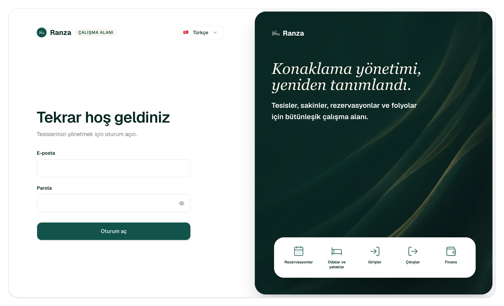
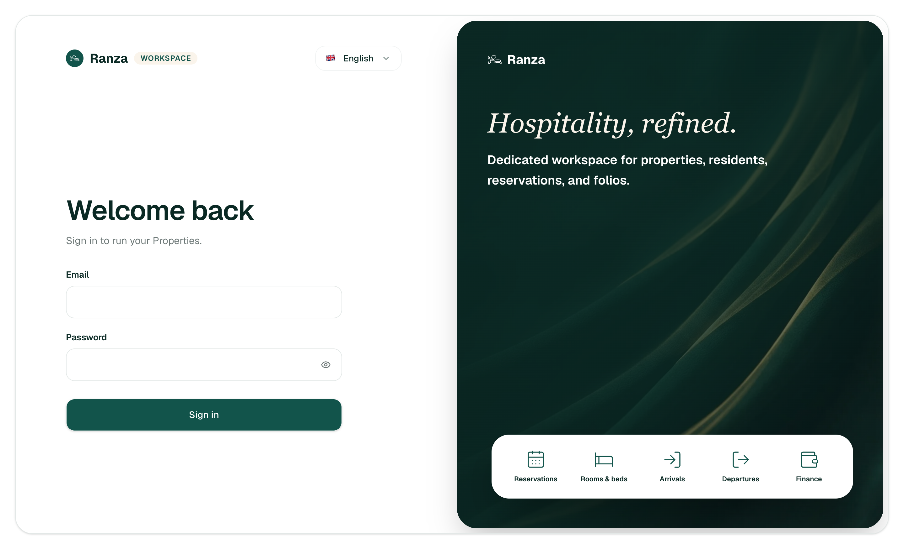
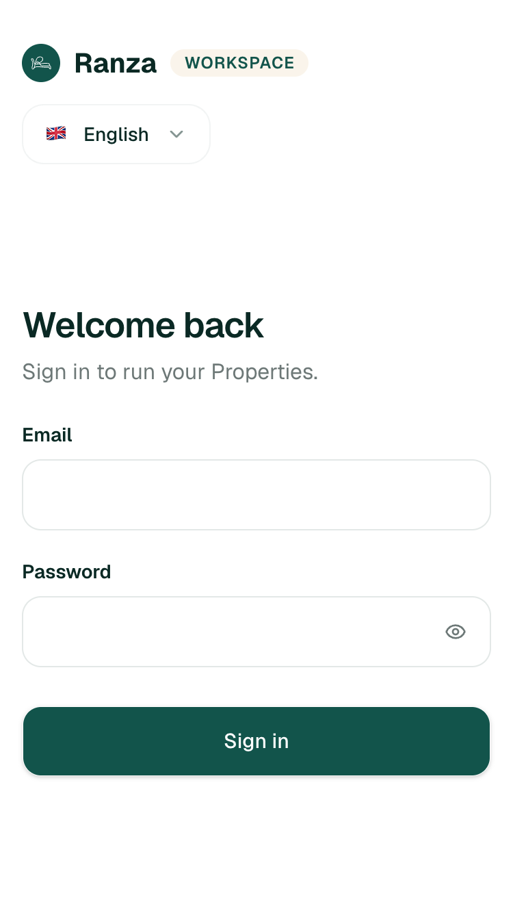
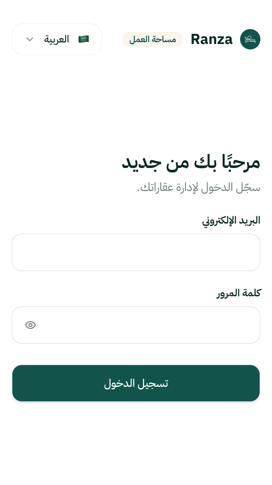
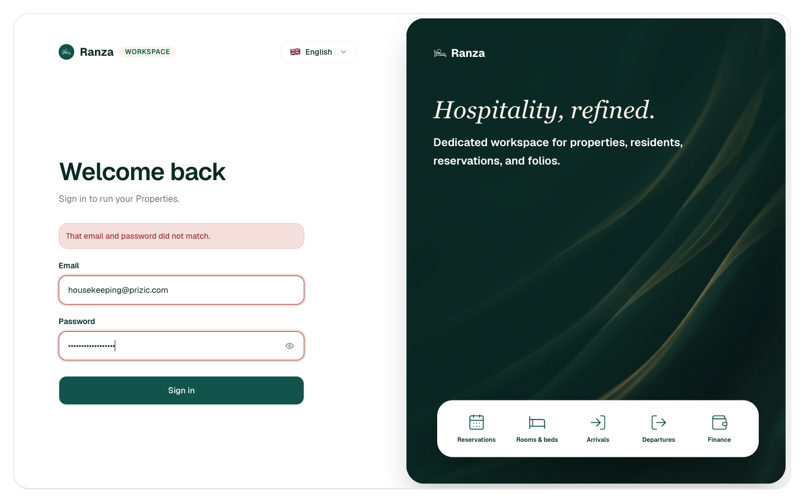
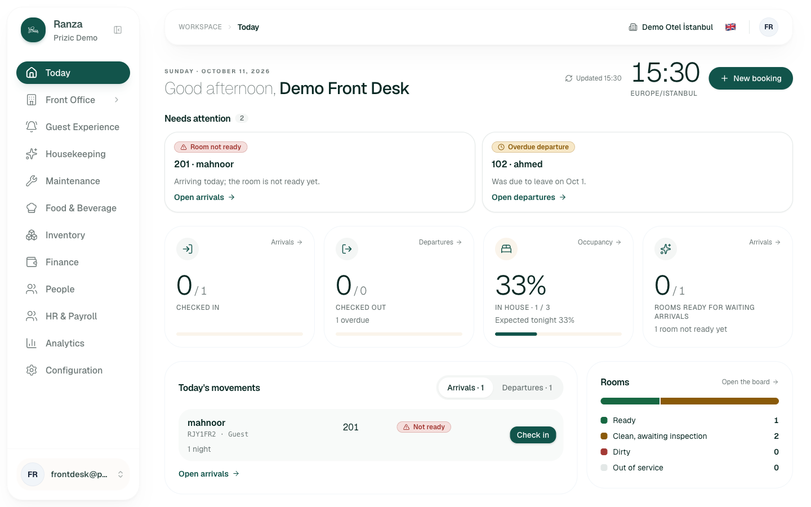
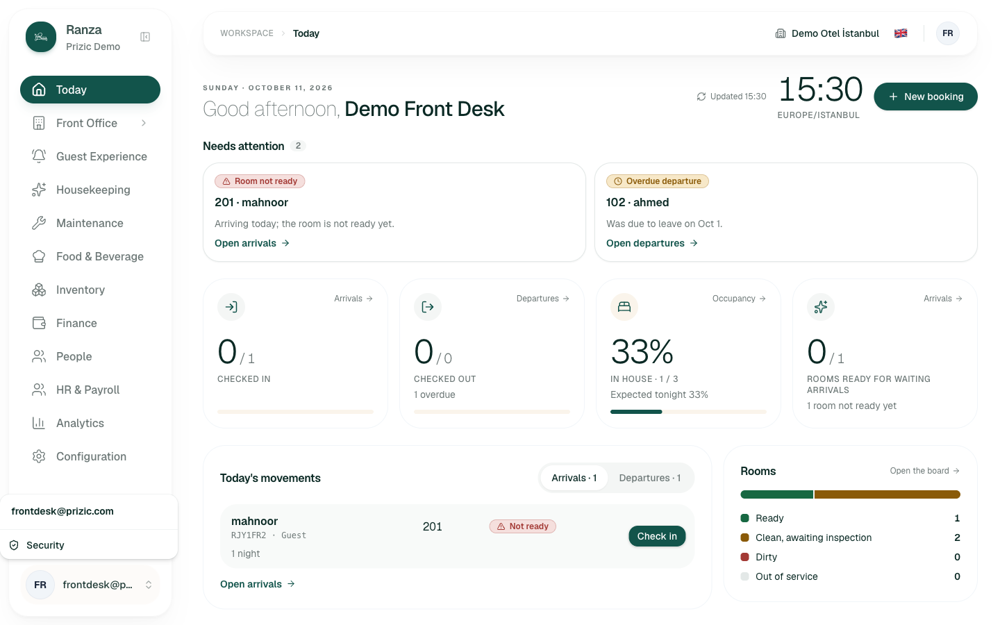
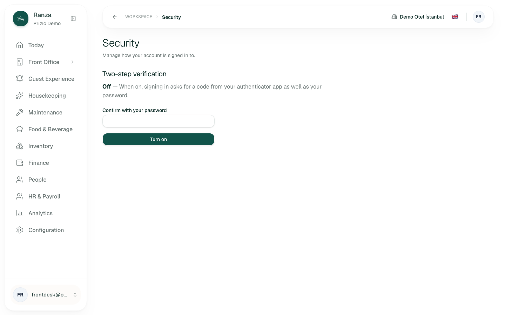
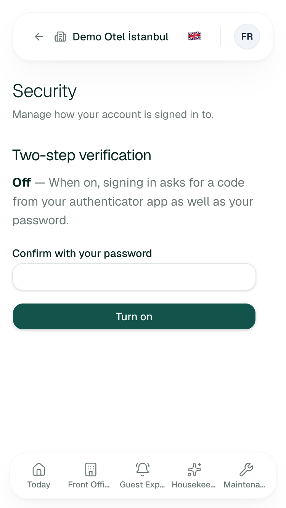
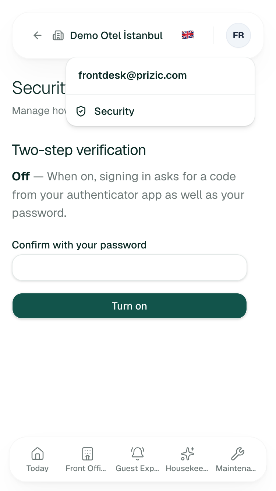
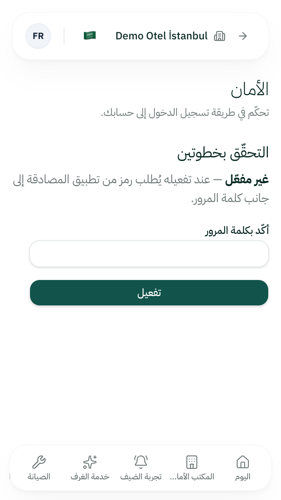
Scope and limits of this audit
- One wrong-password attempt on the Housekeeping address, and one correct Front Desk sign-in (needed to reach Security). Before the attempt I read the auth module: the only protection is Better Auth's 3-per-10-seconds throttle (the docs say the two-factor lockout columns never engage, OA-S2-13), no per-account lockout was found. The panel buttons that change an account (Turn on, Turn off, Verify) were not pressed.
- Not seen live: the second-factor challenge, the enrolment screen, the enabled state, the rate-limit message, a real session expiry, Turkish Security, the language dropdown itself. These are inferred from code and are marked so.
- The Front Desk session in my isolated context was left signed in, because the app has no sign-out and I did not call the auth endpoint directly.